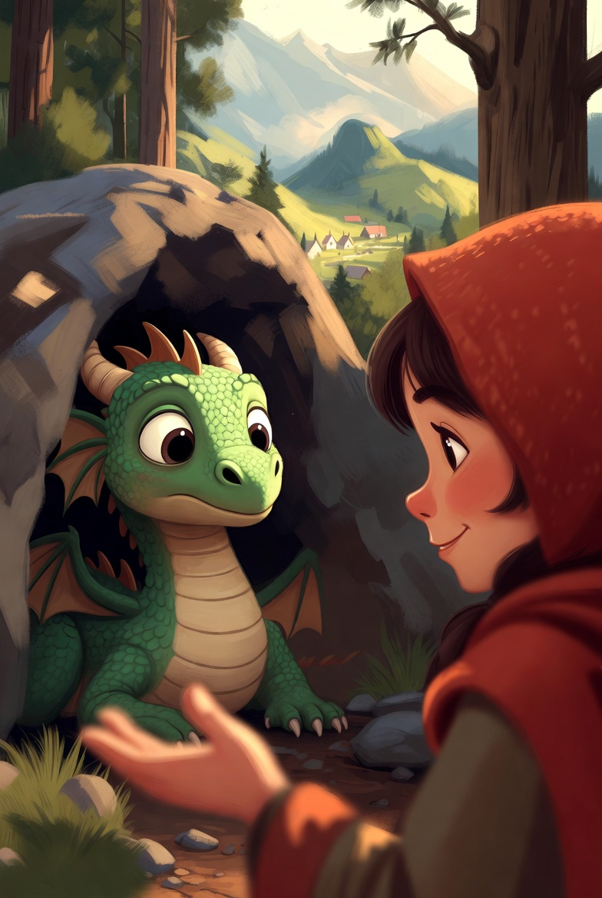
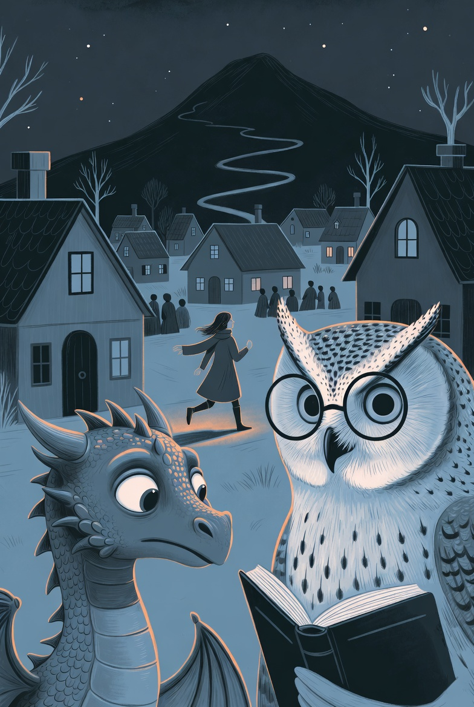
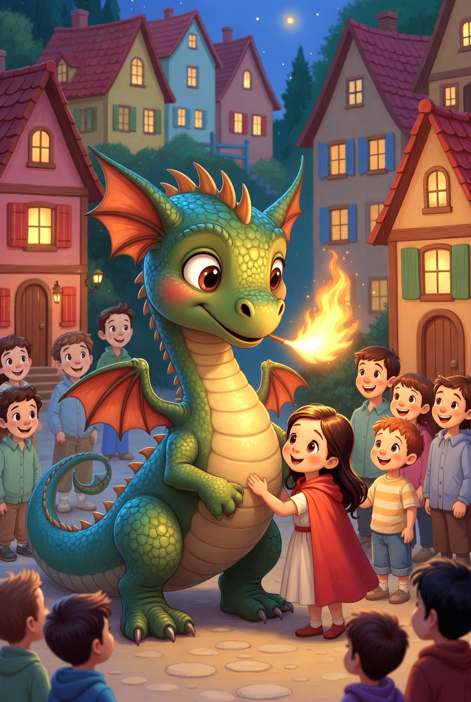

El petit drac verd de la muntanya
A la falda d'una muntanya alta i plena de pins vivia en Flam, un petit drac verd amb escates brillants i ulls grans i curiosos. La seva cova era càlida i segura, amb vistes al poble que s'estenia a la vall. Des d'allà, li agradava observar les teulades vermelles, el fum suau de les xemeneies i la gent caminant per la plaça. Sempre havia sentit curiositat pels humans, però mai no s'hi havia acostat gaire.

En Flam observant la vall des de la seva cova
En Flam tenia un secret que el feia sentir diferent dels altres dracs de les històries antigues. Li feia por el seu propi foc. Sabia que dins seu hi havia una flama poderosa, però no confiava en ella. Un dia, tot sol a la cova, va decidir intentar-ho. Va respirar fondo, va notar la calor pujant per la gola… i una espurna petita va escapar-se-li de la boca. Espantat, va saltar enrere i va córrer a apagar-la amb les potes, convençut que podia provocar un incendi.
—No puc… —es repetia—. El meu foc és perillós.
A partir d'aquell moment, cada vegada que notava aquella escalfor dins seu, s'amagava. Preferia sentir-se covard abans que arriscar-se a fer mal a algú.

La Lina descobreix en Flam prop de la cova
Un matí de primavera, mentre el sol tenyia la muntanya de llum daurada, una nena va aparèixer prop de la cova. Era la Lina. Duia un cistell ple de flors i caminava sense pressa, observant papallones i cantant fluixet. Quan va veure en Flam, es van quedar mirant en silenci. Ell va tensar les ales, preparat per fugir.
Però la Lina no va cridar.
—Hola —va dir amb naturalitat—. Ets tu qui viu aquí?
En Flam va assentir, sorprès.
—Sí… però no m'hi acosto al poble.
—Doncs jo sí que m'hi acostaré —va respondre ella amb un somriure—. Sembles simpàtic.
Aquell dia van parlar molta estona. La Lina li va explicar com era la vida al poble: el forn que feia olor de pa calent, la plaça on jugaven els nens, les històries que li agradava llegir a la vora del foc. En Flam li va ensenyar un estany amagat i una roca alta des d'on es veia tota la vall. A poc a poc, l'amistat va créixer. La Lina pujava sovint a visitar-lo, i en Flam ja no se sentia tan sol.
Tot i així, encara no li havia confessat la seva por.

En Flam il·lumina el poble durant la tempesta
L'hivern va arribar amb vents freds i dies grisos. Una nit, una tempesta ferotge va esclatar sobre el poble. El vent bufava amb tanta força que apagava torxes i fogueres. La pluja queia sense parar, i les xemeneies es van quedar sense flama. El poble va quedar a les fosques.
Dins les cases, la gent tremolava. Un nen plorava perquè tenia fred. El forner mirava el seu forn apagat sense saber com coure el pa. Una àvia embolicava els seus néts amb mantes gruixudes. Sense foc, no hi havia escalfor ni llum.
La Lina, mirant la plaça fosca des de la finestra, va pensar immediatament en Flam. Es va posar una capa gruixuda i, tot i la pluja, va pujar cap a la muntanya.
Quan va arribar a la cova, en Flam estava encongit, espantat pels trons.
—Flam —va dir ella, amb la veu tremolosa però decidida—, el poble necessita ajuda. Els focs s'han apagat.
El petit drac va sentir de seguida la calor dins seu, com si la flama volgués sortir. Però també va sentir la por de sempre.
—I si faig mal a algú? —va preguntar amb els ulls baixos.
Des d'un arbre antic prop de la cova, el Mussol Saví va desplegar les ales i va baixar planejant suaument. Era vell i serè, amb una mirada profunda que semblava haver vist moltes coses.
—Flam —va dir amb veu pausada—, el foc no és enemic. El foc és llum, és cuina, és protecció. Depèn de qui el faci servir. Tu tens por perquè tens bon cor. I precisament per això el teu foc pot ser segur.
En Flam va quedar en silenci. Va mirar la Lina, xopa per la pluja però amb els ulls plens de confiança. Va recordar el nen que plorava, el forn apagat, l'àvia amb les mantes. Va tancar els ulls un moment, respirant profundament. Aquesta vegada no volia fugir.
—Ho intentaré —va dir finalment.
Va obrir la boca amb cura. Una flama petita i daurada va sortir suaument, com la llum d'una espelma. No cremava amb fúria; escalfava amb dolçor. En veure que la cova no s'encenia ni hi havia cap peril, en Flam va sentir una força nova dins el pit.
Va volar cap al poble amb la Lina corrent al seu costat. A la plaça, va inclinar el cap i va encendre la foguera central. Després, amb molta cura, va anar encenent altres focs. El forner va poder tornar a escalfar el forn. L'àvia va estendre les mans davant la flama amb un sospir d'alleujament. El nen va deixar de plorar i va somriure en veure la llum tornar.
La gent mirava el petit drac amb sorpresa… i després amb gratitud.
—Gràcies! —va cridar algú.
—És el nostre drac! —va dir el nen.
En Flam sentia el cor bategant fort, però ja no era por el que l'omplia. Era alegria. Va comprendre que el seu foc era especial perquè naixia del desig d'ajudar. No destruïa: protegia.
Quan la tempesta es va esvair i els núvols van deixar pas a un cel clar, el poble tornava a estar ple de llum i vida. La Lina es va acostar i el va abraçar tan fort com va poder.
—Ho veus? —li va dir—. El teu foc surt del teu bon cor.
Des d'aquell dia, en Flam ja no es va amagar mai més. Continuava sent prudent, però no deixava que la por decidís per ell. Ajudava a encendre les fogueres a l'hivern, il·luminava la plaça durant les festes i escalfava el forn quan calia. El Mussol Saví l'observava des del seu arbre amb satisfacció, sabent que el petit drac havia après una gran lliçó.
I així, entre la muntanya i la vall, en Flam es va convertir en el drac amic del poble. Tothom sabia que, quan la foscor arribava, sempre hi hauria una flama càlida nascuda d'un cor valent.
A la falda de una montaña alta y llena de pinos vivía Flam, un pequeño dragón verde con escamas brillantes y ojos grandes y curiosos. Su cueva era cálida y segura, con vistas al pueblo que se extendía por el valle. Desde allí, le gustaba observar los tejados rojos, el humo suave de las chimeneas y la gente caminando por la plaza. Siempre había sentido curiosidad por los humanos, pero nunca se había acercado mucho a ellos.
Flam observando el valle desde su cueva
Flam tenía un secreto que le hacía sentir diferente de los otros dragones de las historias antiguas. Le daba miedo su propio fuego. Sabía que dentro de él había una llama poderosa, pero no confiaba en ella. Un día, solo en la cueva, decidió intentarlo. Respiró hondo, notó el calor subiendo por la garganta… y una chispa pequeña escapó de su boca. Espantado, saltó hacia atrás y corrió a apagarla con las patas, convencido de que podía provocar un incendio.
—No puedo… —se repetía—. Mi fuego es peligroso.
A partir de ese momento, cada vez que notaba aquel calor dentro de él, se escondía. Prefería sentirse cobarde antes que arriesgarse a hacer daño a alguien.
Lina descubre a Flam cerca de la cueva
Una mañana de primavera, mientras el sol teñía la montaña de luz dorada, una niña apareció cerca de la cueva. Era Lina. Llevaba una cesta llena de flores y caminaba sin prisa, observando mariposas y cantando suavemente. Cuando vio a Flam, se quedaron mirándose en silencio. Él tensó las alas, preparado para huir.
Pero Lina no gritó.
—Hola —dijo con naturalidad—. ¿Eres tú quien vive aquí?
Flam asintió, sorprendido.
—Sí… pero no me acerco al pueblo.
—Pues yo sí me acercaré —respondió ella con una sonrisa—. Pareces simpático.
Aquel día hablaron mucho rato. Lina le explicó cómo era la vida en el pueblo: el horno que olía a pan caliente, la plaza donde jugaban los niños, las historias que le gustaba leer junto al fuego. Flam le enseñó un estanque escondido y una roca alta desde donde se veía todo el valle. Poco a poco, la amistad creció. Lina subía a menudo a visitarlo, y Flam ya no se sentía tan solo.
Aun así, aún no le había confesado su miedo.
Flam ilumina el pueblo durante la tormenta
El invierno llegó con vientos fríos y días grises. Una noche, una tormenta feroz estalló sobre el pueblo. El viento soplaba con tanta fuerza que apagaba antorchas y hogueras. La lluvia caía sin parar, y las chimeneas se quedaron sin llama. El pueblo quedó a oscuras.
Dentro de las casas, la gente temblaba. Un niño lloraba porque tenía frío. El panadero miraba su horno apagado sin saber cómo cocer el pan. Una abuela envolvía a sus nietos con mantas gruesas. Sin fuego, no había calor ni luz.
Lina, mirando la plaza oscura desde la ventana, pensó inmediatamente en Flam. Se puso una capa gruesa y, a pesar de la lluvia, subió hacia la montaña.
Cuando llegó a la cueva, Flam estaba encogido, asustado por los truenos.
—Flam —dijo ella, con la voz temblorosa pero decidida—, el pueblo necesita ayuda. Los fuegos se han apagado.
El pequeño dragón sintió de inmediato el calor dentro de él, como si la llama quisiera salir. Pero también sintió el miedo de siempre.
—¿Y si hago daño a alguien? —preguntó con los ojos bajos.
Desde un árbol antiguo cerca de la cueva, el Búho Sabio desplegó las alas y bajó planeando suavemente. Era viejo y sereno, con una mirada profunda que parecía haber visto muchas cosas.
—Flam —dijo con voz pausada—, el fuego no es enemigo. El fuego es luz, es cocina, es protección. Depende de quién lo use. Tú tienes miedo porque tienes buen corazón. Y precisamente por eso tu fuego puede ser seguro.
Flam se quedó en silencio. Miró a Lina, empapada por la lluvia pero con los ojos llenos de confianza. Recordó al niño que lloraba, al horno apagado, a la abuela con las mantas. Cerró los ojos un momento, respirando profundamente. Esta vez no quería huir.
—Lo intentaré —dijo finalmente.
Abrió la boca con cuidado. Una llama pequeña y dorada salió suavemente, como la luz de una vela. No quemaba con furia; calentaba con dulzura. Al ver que la cueva no se encendía ni había peligro, Flam sintió una fuerza nueva en el pecho.
Voló hacia el pueblo con Lina corriendo a su lado. En la plaza, inclinó la cabeza y encendió la hoguera central. Después, con mucho cuidado, fue encendiendo otros fuegos. El panadero pudo volver a calentar el horno. La abuela extendió las manos ante la llama con un suspiro de alivio. El niño dejó de llorar y sonrió al ver la luz volver.
La gente miraba al pequeño dragón con sorpresa… y luego con gratitud.
—¡Gracias! —gritó alguien.
—¡Es nuestro dragón! —dijo el niño.
Flam sentía el corazón latiendo fuerte, pero ya no era miedo lo que lo llenaba. Era alegría. Comprendió que su fuego era especial porque nacía del deseo de ayudar. No destruía: protegía.
Cuando la tormenta se disipó y las nubes dejaron paso a un cielo claro, el pueblo volvía a estar lleno de luz y vida. Lina se acercó y lo abrazó tan fuerte como pudo.
—¿Lo ves? —le dijo—. Tu fuego sale de tu buen corazón.
Desde aquel día, Flam ya no se escondió nunca más. Seguía siendo prudente, pero no dejaba que el miedo decidiera por él. Ayudaba a encender las hogueras en invierno, iluminaba la plaza durante las fiestas y calentaba el horno cuando hacía falta. El Búho Sabio lo observaba desde su árbol con satisfacción, sabiendo que el pequeño dragón había aprendido una gran lección.
Y así, entre la montaña y el valle, Flam se convirtió en el dragón amigo del pueblo. Todos sabían que, cuando la oscuridad llegaba, siempre habría una llama cálida nacida de un corazón valiente.
At the foot of a tall mountain covered in pine trees lived Flam, a small green dragon with shiny scales and big, curious eyes. His cave was warm and safe, with views of the village that spread across the valley. From there, he liked to observe the red rooftops, the gentle smoke from the chimneys, and the people walking through the square. He had always been curious about humans, but he had never approached them much.
Flam watching the valley from his cave
Flam had a secret that made him feel different from the other dragons in the old stories. He was afraid of his own fire. He knew there was a powerful flame inside him, but he didn't trust it. One day, alone in his cave, he decided to try. He took a deep breath, felt the heat rising up his throat… and a tiny spark escaped from his mouth. Terrified, he jumped back and ran to put it out with his paws, convinced he could start a fire.
"I can't…" he kept repeating to himself. "My fire is dangerous."
From that moment on, whenever he felt that warmth inside him, he would hide. He preferred to feel like a coward rather than risk hurting someone.
Lina discovers Flam near the cave
One spring morning, while the sun painted the mountain in golden light, a girl appeared near the cave. It was Lina. She carried a basket full of flowers and walked unhurriedly, watching butterflies and singing softly. When she saw Flam, they stood looking at each other in silence. He tensed his wings, ready to flee.
But Lina didn't scream.
"Hello," she said naturally. "Are you the one who lives here?"
Flam nodded, surprised.
"Yes… but I don't go near the village."
"Well, I will come near," she replied with a smile. "You seem nice."
That day they talked for a long time. Lina explained what life was like in the village: the bakery that smelled of warm bread, the square where the children played, the stories she liked to read by the fire. Flam showed her a hidden pond and a high rock from where the whole valley could be seen. Little by little, their friendship grew. Lina often came up to visit him, and Flam no longer felt so alone.
Still, he hadn't confessed his fear to her yet.
Flam lights up the village during the storm
Winter arrived with cold winds and gray days. One night, a fierce storm burst over the village. The wind blew so hard that it extinguished torches and bonfires. The rain fell endlessly, and the chimneys lost their flames. The village was left in darkness.
Inside the houses, people trembled. A child cried because he was cold. The baker looked at his extinguished oven, not knowing how to bake the bread. A grandmother wrapped her grandchildren in thick blankets. Without fire, there was no warmth or light.
Lina, looking at the dark square from her window, immediately thought of Flam. She put on a thick cloak and, despite the rain, climbed up the mountain.
When she arrived at the cave, Flam was curled up, frightened by the thunder.
"Flam," she said, her voice trembling but determined, "the village needs help. The fires have gone out."
The little dragon immediately felt the heat inside him, as if the flame wanted to come out. But he also felt his usual fear.
"What if I hurt someone?" he asked, looking down.
From an ancient tree near the cave, the Wise Owl spread his wings and glided down gently. He was old and serene, with a deep gaze that seemed to have seen many things.
"Flam," he said in a calm voice, "fire is not the enemy. Fire is light, it is cooking, it is protection. It depends on who uses it. You are afraid because you have a good heart. And precisely because of that, your fire can be safe."
Flam remained silent. He looked at Lina, soaked by the rain but with eyes full of confidence. He remembered the crying child, the extinguished oven, the grandmother with her blankets. He closed his eyes for a moment, breathing deeply. This time he didn't want to run away.
"I'll try," he finally said.
He opened his mouth carefully. A small, golden flame came out gently, like the light of a candle. It didn't burn with fury; it warmed with sweetness. Seeing that the cave didn't catch fire and there was no danger, Flam felt a new strength in his chest.
He flew to the village with Lina running by his side. In the square, he bowed his head and lit the central bonfire. Then, very carefully, he went about lighting other fires. The baker was able to heat his oven again. The grandmother extended her hands toward the flame with a sigh of relief. The child stopped crying and smiled when he saw the light return.
The people looked at the little dragon with surprise… and then with gratitude.
"Thank you!" someone shouted.
"He's our dragon!" said the child.
Flam felt his heart beating strongly, but it was no longer fear that filled him. It was joy. He understood that his fire was special because it was born from the desire to help. It didn't destroy: it protected.
When the storm cleared and the clouds gave way to a clear sky, the village was once again full of light and life. Lina approached and hugged him as tightly as she could.
"You see?" she told him. "Your fire comes from your good heart."
From that day on, Flam never hid again. He remained cautious, but he didn't let fear decide for him. He helped light the winter bonfires, illuminated the square during festivals, and warmed the oven when needed. The Wise Owl watched him from his tree with satisfaction, knowing that the little dragon had learned a great lesson.
And so, between the mountain and the valley, Flam became the friend of the village. Everyone knew that when darkness arrived, there would always be a warm flame born from a brave heart.
En Flam és un petit drac verd que viu a la falda d'una muntanya i té por del seu propi foc per por de fer mal. Gràcies a l'amistat amb la Lina, una nena del poble, i la saviesa del Mussol Saví, aprèn que el foc pot ser segur quan ve del cor. Durant una tempesta d'hivern que apaga tots els focs del poble, Flam supera la seva por i utilitza la seva flama per ajudar els vilatans, descobrint que el seu foc és especial perquè neix del desig de protegir, no de destruir. Des d'aleshores, es converteix en el drac amic del poble.
Flam es un pequeño dragón verde que vive al pie de una montaña y tiene miedo de su propio fuego por temor a hacer daño. Gracias a la amistad con Lina, una niña del pueblo, y la sabiduría del Búho Sabio, aprende que el fuego puede ser seguro cuando viene del corazón. Durante una tormenta de invierno que apaga todos los fuegos del pueblo, Flam supera su miedo y utiliza su llama para ayudar a los aldeanos, descubriendo que su fuego es especial porque nace del deseo de proteger, no de destruir. Desde entonces, se convierte en el dragón amigo del pueblo.
Flam is a small green dragon living at the foot of a mountain who fears his own fire, afraid of hurting others. Through friendship with Lina, a village girl, and the wisdom of the Wise Owl, he learns that fire can be safe when it comes from the heart. During a winter storm that extinguishes all fires in the village, Flam overcomes his fear and uses his flame to help the villagers, discovering that his fire is special because it is born from the desire to protect, not destroy. From then on, he becomes the village's friend.